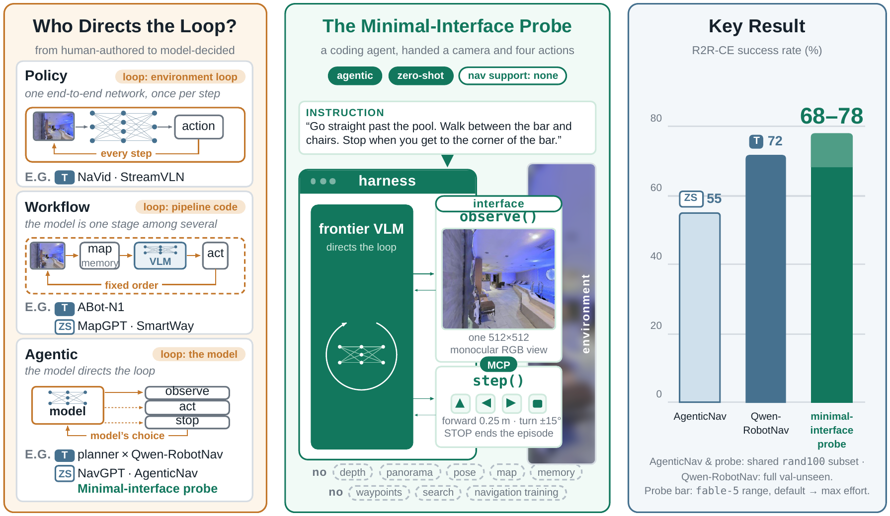
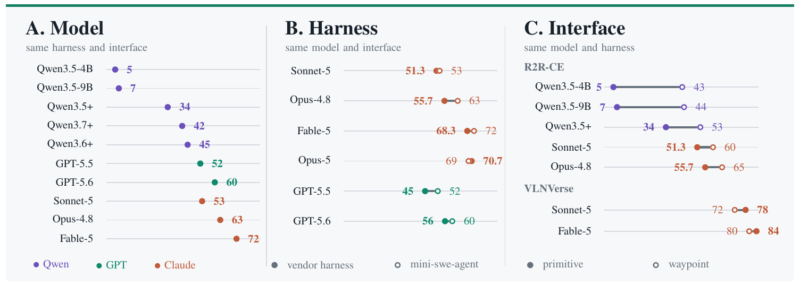

Embodied agents
take control
Give a general-purpose coding agent one monocular RGB camera and four primitive actions — nothing else. Zero-shot, it sustains the whole perceive → reason → act loop itself and rivals industrial-scale trained navigation policies on R2R-CE. No map, no explicit memory, no planner, no navigation training: the model is not called by a navigator — it is the navigator.
observe() / step() call, verbatim. Right: the monocular camera view it acts on. It turns around, rounds the bed, recovers from a wrong room, and stops in the correct room — SUCCESS, 2.98 m from goal.Who holds the control loop?
Embodied navigation has answered this question two ways. Trained policies bake the loop into weights — capable, but offering limited flexibility across environments and weak recovery when execution goes wrong. Workflow systems keep the loop in human-authored code: the foundation model is one reasoning module inside a hand-wired pipeline of maps, memory, planners, and verifiers — the dominant zero-shot recipe — and even recent dual-brain systems fix the handoff between reasoning and control.
We study the case where the model itself holds the loop — agentic embodied control: the reasoning model directly steers every action through plain tool calls, so reasoning and control stay aligned with no fixed handoff. It is the organization coding agents already use to write software; frontier models' multimodal, multi-turn, and spatial abilities may have made it viable for embodiment. The probe asks how far it goes with no navigation machinery at all.

One camera. Basic actions. Nothing else.
The minimal interface is a diagnostic lower bound, not a convenience baseline. Everything a navigation system usually leans on is deliberately taken away; whatever performance remains must come from the model itself. If the agent succeeds under these conditions, no hidden navigation module can claim the credit — and where it fails, the missing capability is named.
- panoramic observation
- depth & pose sensors
- metric / topological map
- explicit memory module
- planner & search
- waypoint predictor
- navigation-specific training
- observe() → one monocular RGB frame
- forward-facing camera, 512×512
- step(actions) → primitives, in order
- 0 STOP · 1 FWD 0.25 m · 2 L 15° · 3 R 15°
- one instruction, natural language
- success = STOP within 3 m of the endpoint
- 500-action budget, fully autonomous
Three coding-agent harnesses drive it — Claude Agent SDK, Codex CLI, and the small open-source mini-swe-agent — each connected to the simulator through the same two tools. The entire task specification is one system prompt:
You are controlling a robot in a real indoor environment (a photorealistic 3D scan of a building). You interact only through these tools: - observe(): look through the robot's forward-facing camera (returns an RGB image). - step(actions): execute movement actions in order. 0 = STOP (permanently ends the episode — declares you have reached the goal), 1 = move forward 0.25 m, 2 = turn left 15 degrees, 3 = turn right 15 degrees. Your task is to follow this navigation instruction to its endpoint: "{instruction}" Rules: - Alternate observing and stepping: look, decide where the instruction wants you to go next, move, look again. - You have a budget of 500 movement actions. - You succeed only if you issue action 0 (STOP) while within 3 meters of the instruction's endpoint. STOP is permanent — issue it only when you believe you are at the goal. - Turning in place (e.g. step([2,2,2,2,2,2])) is a cheap way to look around when unsure. - Work autonomously until you stop; nobody can answer questions.
A real episode, decision by decision
This is episode 10 of the board, replayed from its log —
every frame is the exact image the agent saw, every quote is its own recorded reasoning, every
step() is the exact call it issued.
It turns around, fights its way past the bed corner, wanders into the wrong room,
rebuilds its mental map out loud, and stops — correctly — in the
bathroom. The paper's Fig. 2 shows this same episode.
 obs 1 / 20
obs 1 / 20
observe() · 20 step() · 111 primitives · 332 s. Amber marks the segments the model itself described as blocked or off-route: the bed-corner scrape (5–8) and the wrong-room detour it detects and unwinds (14–15). Use the tape or arrow keys to scrub.They add machinery. We expose what the model already knows.
On R2R-CE, engineered zero-shot agents top out at 55 SR with panoramas, depth, maps, memory, and action tools. The best industrial-scale trained policy reports 72 with panoramic input and in-domain data. The minimal-interface agent — one camera, four actions, no training — reaches 72 with a small open-source harness and 78 at maximum effort.
| harness \ model | sonnet-5 | opus-4.8 | fable-5 | opus-5 | gpt-5.5 | gpt-5.6 |
|---|---|---|---|---|---|---|
| Claude SDK · mean of 3 | 51.3 ±1.2 | 55.7 ±2.3 | 68.3 ±1.5 | 70.7 ±3.5 | — | — |
| mini-swe-agent · open | 53 | 63 | 72 | 69 | 52 | 60 |
| Codex CLI | — | — | — | — | 45 | 56 |
Model, harness, interface
The board factorizes the system into three layers and moves one at a time. The answer: model choice dominates, harness differences are modest and descriptive, and the interface is the capability boundary — decisive compensation for weaker models, optional acceleration for the strongest. Model-centered, but not model-only.

Capability lives in the weights. Same loop, same tools: swapping the VLM moves SR more than any other change on the board.
A few-hundred-line open ReAct loop is competitive with vendor harnesses — gaps of 2–7 SR, read as descriptive since serving paths differ. Model choice matters more than the loop around it.
Tools still set what a model can express: decisive compensation for weak models, optional acceleration for strong ones.
Where it still fails
The probe is a diagnostic; its failures are as informative as its wins.
Failure is silent, and route-level rather than stop-level. Auditing all 30 failures of the strongest replicated fable-5 run: 26 end with a voluntary STOP and 23 claim success while 3.1–34.1 m from the goal — yet only 5 ever enter the 3 m success region, so most failures diverge early (wrong referent binding is the largest category), not merely stop at the wrong point.
Self-diagnosis without self-correction. In at least 15 of those episodes the reasoning states the correct doubt — and still commits to the wrong endpoint. Keeping reasoning and control aligned makes behavior consistent with reasoning, not necessarily correct: reliability shifts to verification and self-correction inside the agent.
Strong R2R-CE is a short-horizon result. Matched fable-5 runs fall from 70 SR on R2R-CE to 26 on longer-horizon RxR-CE (39 with waypoints) — a capability ceiling, not general embodied competence. Effort is no free lever either: fable-5 gains +9.7 at max effort, but other shifts span −5 to +6 with no consistent direction — small beside the 67-point model axis.
Context growth and latency bar sustained operation. The minimal loop re-sends its full history every call: final-turn context reaches a median of 33k and a maximum of 169k tokens; median wall time is 206 s with 18.6% of episodes over ten minutes — and RxR-CE doubles to triples the context.
On a real robot, reasoning transfers — embodiment does not. On a Unitree Go2 the agent resolves conditional instructions and keeps task state across fetch-and-return, but it barely knows its own body (the camera clears a doorway while the rear wedges), step() reports requested rather than realized motion, and without persistent spatial memory it fails at counting, revisits, and distance.
Read the comparisons as stated. External numbers are full val-unseen; ours is a frozen 100-episode board — a contextual range, not a same-split leaderboard. The harness comparison is descriptive: serving paths and product defaults were not independently controlled.
Citation
If the probe, the board, or the agentic-embodied-control framing is useful in your research, please cite the paper.
@misc{zhou2026embodiedagentstakecontrol,
title = {Embodied Agents Take Control: Minimal-Interface Zero-Shot
Agents Rival Industrial-Scale Policies in
Vision-and-Language Navigation},
author = {Jian Zhou and Xunyi Zhao and Gengze Zhou and Zerui Li and
Sihao Lin and Jiajun Liu and Qi Wu},
year = {2026},
eprint = {2607.26148},
archivePrefix = {arXiv},
primaryClass = {cs.RO},
url = {https://arxiv.org/abs/2607.26148}
}